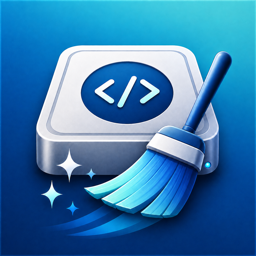

DDCCdevdrivecacheclean.comEvery cleaner shows you a number.
This one shows you everything.
Free macOS disk cleanup that names every path, what created it, and what removing it costs.
DEVELOPER CACHES11.65 GB
APP FOOTPRINTS46.15 GB
RETAINED, NOT OFFERED2.24 GB